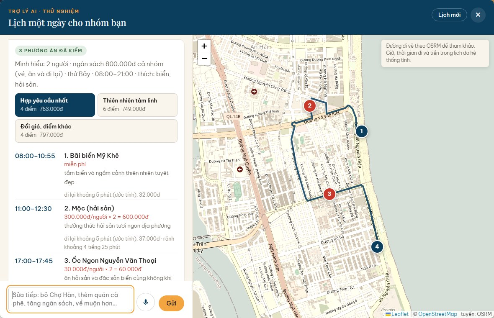
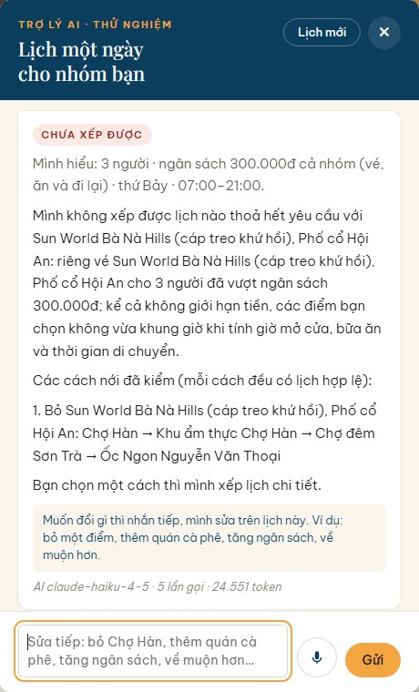

AltF4 · Track C Du lịch · L3B
DEMO CP4 · 28/11/2026
AI chọn điểm. Code kiểm giờ mở cửa, ngân sách, quãng đường. Không xếp được thì nói thẳng.
Võ Trần Công
Đội trưởng · kiến trúc AI
Trịnh Minh Đức
Code lõi · demo
Hà Văn Khánh Đạt
Bằng chứng · impact
Phan Đào Minh Quân
Đánh giá · chi phí

github.com/cong2235/K5-Day15-L3B-AltF4 · Claude Haiku 4.5 qua Amazon Bedrock
CCông
Người dùng & chỗ đau
02 / 10
Người dùng: người lên lịch trong nhóm bạn trẻ 2–4 người, lần đầu tự đi Đà Nẵng.
59%
chuyến gặp sự cố giờ hoặc quãng đường (13/22)
90’
trung vị thời gian lên lịch cho một ngày
Câu 6 · n = 21
7/15
người dùng AI chung gặp giờ, giá hoặc địa điểm sai
Câu 11
“Chỗ đi chơi quá xa, phải sắp xếp lại lịch”
Phiếu khảo sát 22
“tiền đi chơi quá đắt , phải xin thêm”
Phiếu khảo sát 21
Khảo sát qua Zalo 27–28/11/2026 · 26 phiếu, lọc còn n = 22 · evidence/summary.md
ĐĐạt
Vì sao chọn bài này
03 / 10
Đã loại: gợi ý quán đặc sản (khó đo) · xếp lại khi mưa (thiếu dữ liệu thời tiết).
129.000
giờ lên lịch
51.000
chuyến gặp sự cố
≈ 86.000 chuyến tự đi / tháng (860.000 lượt khách nội địa × 10%, tự ước tính)
× 90 phút lên lịch · × 59% gặp sự cố
spec.md §2 · lượt khách: Cục Thống kê Đà Nẵng qua baovanhoa.vn
ĐĐạt
Giải pháp
04 / 10
AI
Câu tự do → ngân sách, số người, giờ, sở thích
Code
34 điểm có nguồn, giờ mở, giá
AI
Chỉ chọn điểm và thứ tự
Code
Đóng cửa, trễ giờ, vượt tiền, thiếu bữa
AI
Theo đúng lỗi code chỉ ra
Code
Lịch + tổng tiền, hoặc “không xếp được” + cách nới
Tiền, giờ, quãng đường không do model viết.
Kèm cách nới mà code đã kiểm.
Không đặt vé, không thanh toán.
Khác ChatGPT: thử 4 câu, cả 4 bảng chi của ChatGPT cộng vừa khít ngân sách nhờ một dòng “dự phòng”. Lịch của nhóm có số lần ngược được về dữ liệu.
spec.md §3, §4 · docs/design.md · docs/so-sanh-chatgpt.md
CCông
Giao diện
05 / 10
Mỗi phương án ghi số điểm và tổng tiền, tất cả đều đã qua bước kiểm.
Giá vé × số người, tiền và phút đi lại, lý do chọn từng điểm.
Đánh số theo thứ tự đi, đổi theo phương án đang chọn.
Gõ hoặc nói: “bỏ Chợ Hàn”, “tăng ngân sách lên 1 triệu”.
Ảnh chụp web/ chạy thật với Claude Haiku 4.5, câu T01 · python web/server.py
ĐĐức
Demo live
06 / 10

1
“2 người, 800k cả nhóm, thứ Bảy 8h–21h, thích biển với hải sản.”
→ 3 phương án, lịch chính 763.000đ gồm cả đi lại.
2
“bỏ Chợ Hàn”, “về muộn hơn tới 22h”
→ lịch được sửa và kiểm lại, điểm đã bỏ không quay lại.
3
“3 người, tổng 300k, muốn đi cả Bà Nà Hills và Hội An.”
→ “Chưa xếp được”: vé đã vượt 300k, kèm cách nới đã kiểm.
?
Mất mạng hoặc API quá 30 giây → bật video dự phòng (link trong README).
eval/benchmark.csv (T01, K01) · eval/run-3.csv
ĐĐức
Đánh giá thế nào
07 / 10
Lượt 1
27
Run-2
26
Lượt 2
28
Bộ câu: 6 thường · 18 khó · 6 từ chối, 11/30 từ người dùng hoặc dữ kiện thật. Run-2 tụt vẫn ghi lại.
Không vi phạm ràng buộccần ≥ 17/19
19/19✓
Không bịa địa điểmcần 30/30
30/30✓
Xử lý bất khả thicần 3/3
3/3✓
Từ chối đúngcần 6/6
6/6✓
K18: quán chỉ mở sáng làm cả lịch “không xếp được” → giờ đổi quán, giữ lịch.
T05 lỡ giờ phun lửa cầu Rồng · K09 bỏ vế “yên tĩnh”.
eval/report.md · run-1@20261128-000747 · run-3@20261128-124115 · eval/metric_spec.yaml
QQuân
Chi phí khi dùng thật
08 / 10
Mỗi task thành công · Haiku 4.5
1.231 ₫
= 1.149 ₫ / phiên ÷ 93% tỉ lệ đạt (run-3) · 50 phiên mô phỏng
cost/simulate-2-summary.md · cost/cost-estimate.md · 26.000 ₫/USD (tự ước tính) · chưa tính hosting
QQuân
Kết luận
09 / 10
GO
Pain có thật, đo được, đáng tiền.
Pain có thật
59% · 90’
chuyến gặp sự cố · phút lên lịch một ngày
Đo được
28/30
4/4 metric đạt; 30/30 không bịa địa điểm
Đáng tiền
≈ 1.231 ₫
mỗi lịch dùng được, ≈ 4% giá trị thời gian lên lịch
Còn phải chứng minh: công cụ có thật sự rút ngắn 90 phút lên lịch không — chưa có người dùng thử bấm giờ.
Số dẫn từ trang 02, 07, 08 · validation/log.md
CCông
Nếu có thêm 1 tuần
10 / 10
1
T05: đưa giờ phun lửa cầu Rồng vào bước xếp giờ. K09: nói rõ đánh đổi khi sở thích mâu thuẫn.
Đo: 30/30, mỗi câu chạy ≥ 3 lần
2
Giờ lái xe ban ngày tới Bà Nà, Hội An; thêm quán hải sản và quán tối ở Hội An.
Đo: thêm câu thử từ người dùng thật
3
5–10 nhóm bạn dùng trước chuyến đi thật, bấm giờ từ lúc gõ tới lúc chốt lịch.
Đo: số phút so với 90 phút
Cảm ơn ban giám khảo — mời đặt câu hỏi
github.com/cong2235/K5-Day15-L3B-AltF4eval/report.md mục 4 · validation/log.md
CCông